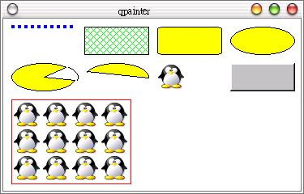

QPainter類別可以在一個「繪圖裝置」（paint device）上進行圖形繪製，這個繪圖裝置可以是一個Widget或是printer，我們在繪圖前必須指定我們要在哪一個裝置上進行繪圖，例如：
QPainter paint(&物件名稱);
我們可以如上在建立物件時指定繪圖裝置，或是在之後再使用begin()方法來指定，若不使用繪圖裝置時，則可以使用end()方法來解除。
QPainter提供畫筆、畫刷、字型等的設定，這邊先介紹如何使用畫筆（Pen）與畫刷（Brush），畫筆與線的繪製有關，而畫刷與面的繪製有關，我們使用下面這個簡單的程式來作示範：
#include <qapplication.h>
#include <qwidget.h>
#include <qpainter.h>
#include <qpen.h>
#include <qpixmap.h>
#include <qdrawutil.h>
class DrawView : public QWidget {
public:
DrawView() {
setBackgroundColor(white); // 背景為白色
}
protected:
void drawShapes(QPainter *p, int sx, int sy);
void paintEvent(QPaintEvent*);
};
void DrawView::drawShapes(QPainter *p, int sx, int sy) {
int x = sx, y = sy;
int w = 80, h = 35;
p->save(); // 儲存繪圖裝置狀態
p->setPen(QPen(Qt::blue, 4, DotLine)); // 藍色、4pixel大的點狀畫筆
p->drawLine(x, y, x+w, y); // 由(x, y)繪到(x+w, y)
x += (w+10);
p->setPen(SolidLine); // 實線
p->setBrush(QBrush(Qt::green, DiagCrossPattern)); // 綠色的方格畫刷
p->drawRect(x, y, w, h); // 畫方塊，左上座標(x, y)，寬高(w, h)
x += (w+10);
p->setBrush(Qt::yellow); // 實心黃色畫刷
p->drawRoundRect(x, y, w, h, 20, 20); // 圓角方塊，圓角半徑20pixel
x += (w+10);
p->drawEllipse(x, y, w, h); // 以方塊為範圍的橢圓形
x = sx;
y += (h+10);
p->drawPie(x, y, w, h, 45*16, 300*16); // 畫缺角的圓
p->drawArc(x+3, y, w, h, 45*16, -60*16); // 畫弧
x += (w+10);
p->drawChord(x, y, w, h, -45, 160*16); // 畫圓切
x += (w+10);
p->drawPixmap(x, y, QPixmap("pengiun.xpm")); // 畫圖片
x += (w+10);
QBrush b(Qt::lightGray);
qDrawWinButton(p, x, y, w, h, colorGroup(), false, &b); // 畫一個按鈕
x = sx;
y += (h+10);
p->setPen(Qt::red);
p->setBrush(NoBrush); // 無畫刷
p->drawRect(x, y, 2*w-12 , 3*h); // 所以是空心方塊
// 填圖
p->drawTiledPixmap(x+2, y+2, 2*w-16, 3*h-4, QPixmap("pengiun.xpm"));
p->restore(); // 復原繪圖裝置狀態
}
// 在paintEvent事件函式中呼叫，就不怕圖形被覆蓋了
void DrawView::paintEvent(QPaintEvent*) {
QPainter p(this);
drawShapes(&p, 10, 10);
}
int main(int argc, char **argv) {
QApplication app(argc, argv);
DrawView draw;
app.setMainWidget(&draw);
draw.show();
return app.exec();
}
這個程式中示範了畫線、畫圓、畫方塊與畫圖片等各種QPainter所提供的繪圖方法，在繪圖時為了避免繪圖結果被其它視窗覆蓋而消失，我們在
paintEvent事件函式中進行繪圖函式的呼叫，當發生視窗重繪（例如視窗覆蓋後又移開時就會發生），就會自動進行圖形的重繪。
下圖為這個程式執行的畫面：

|
|